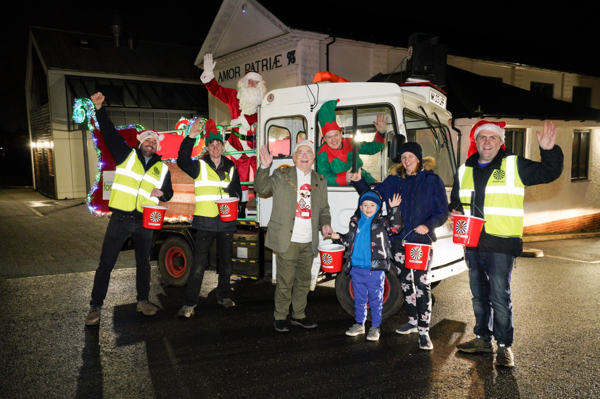
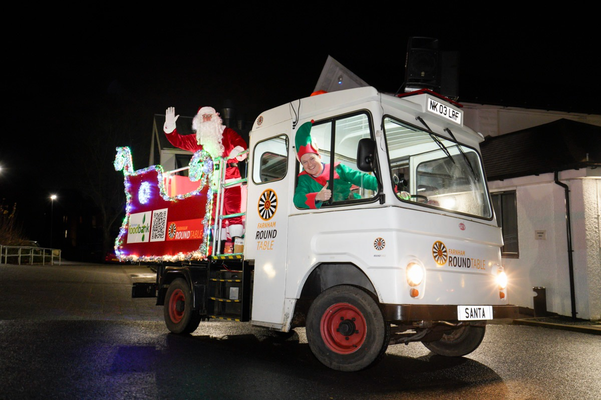
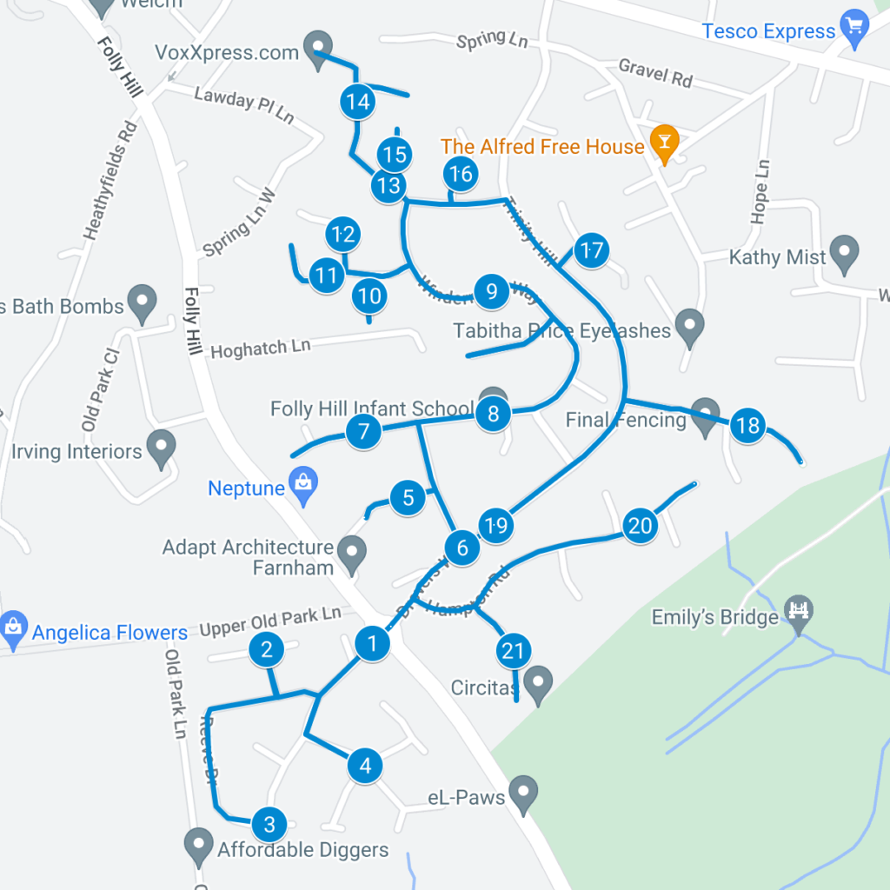
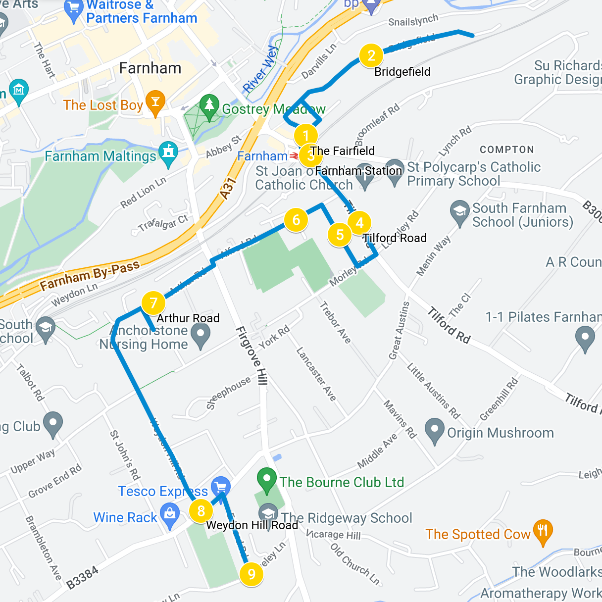
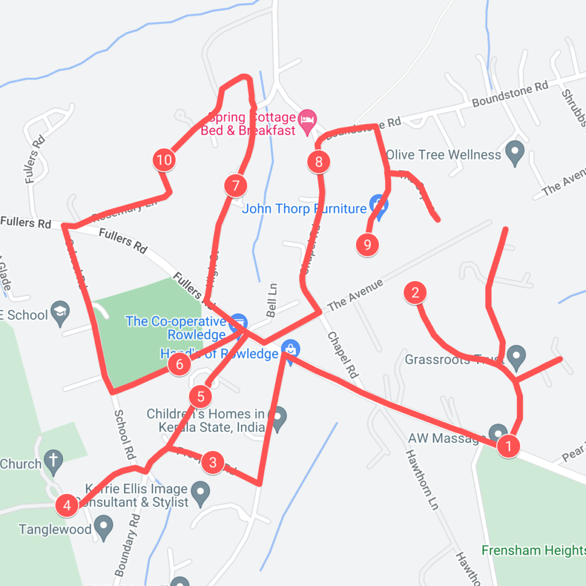
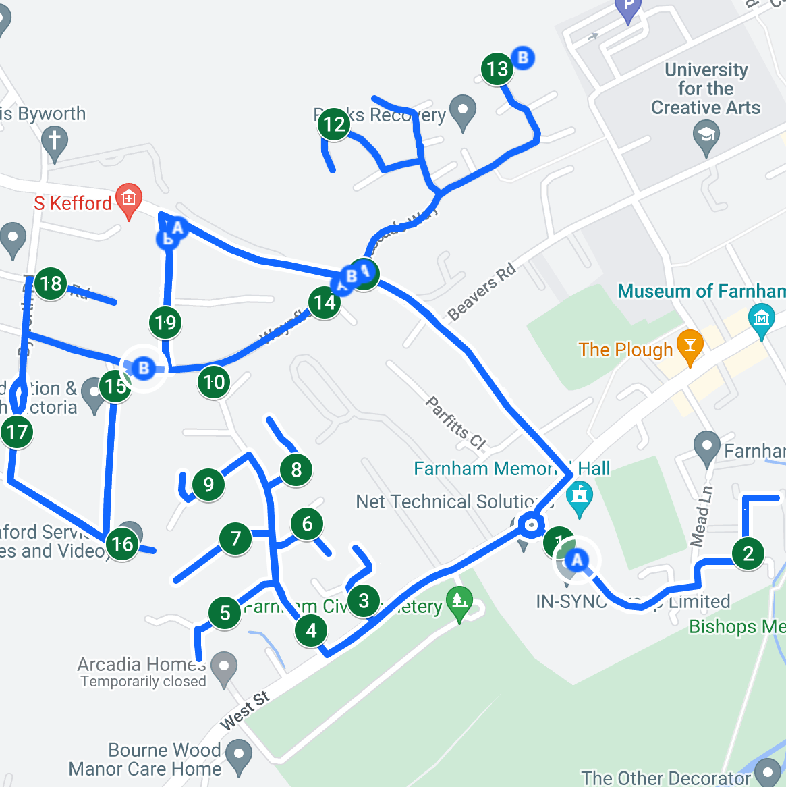
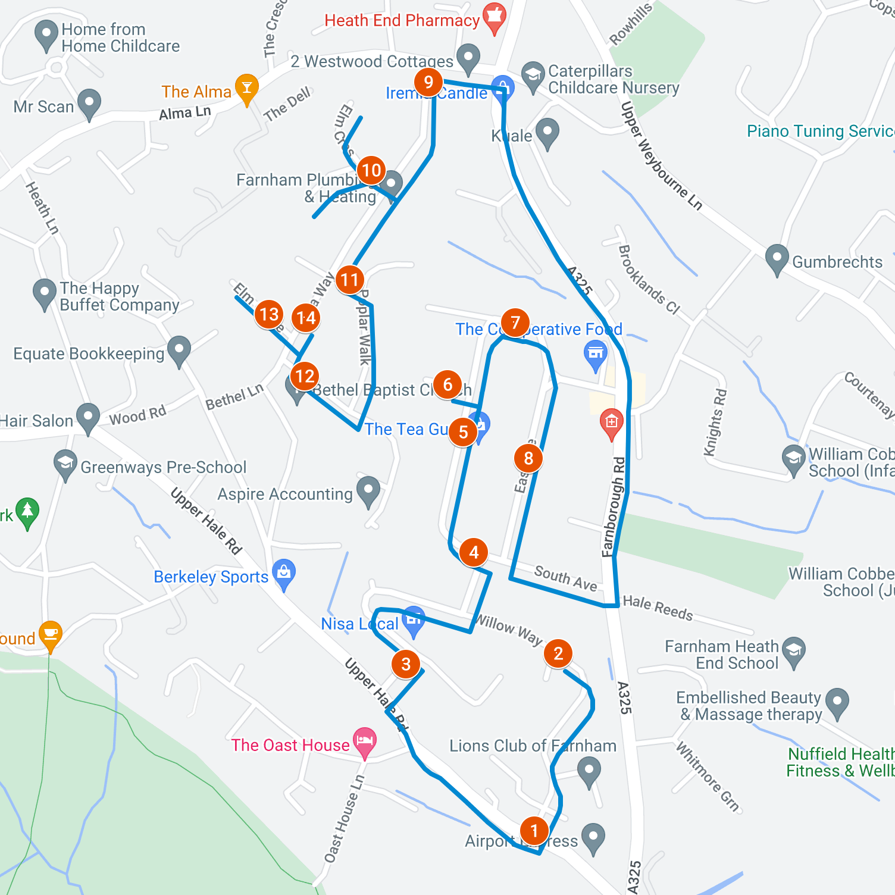
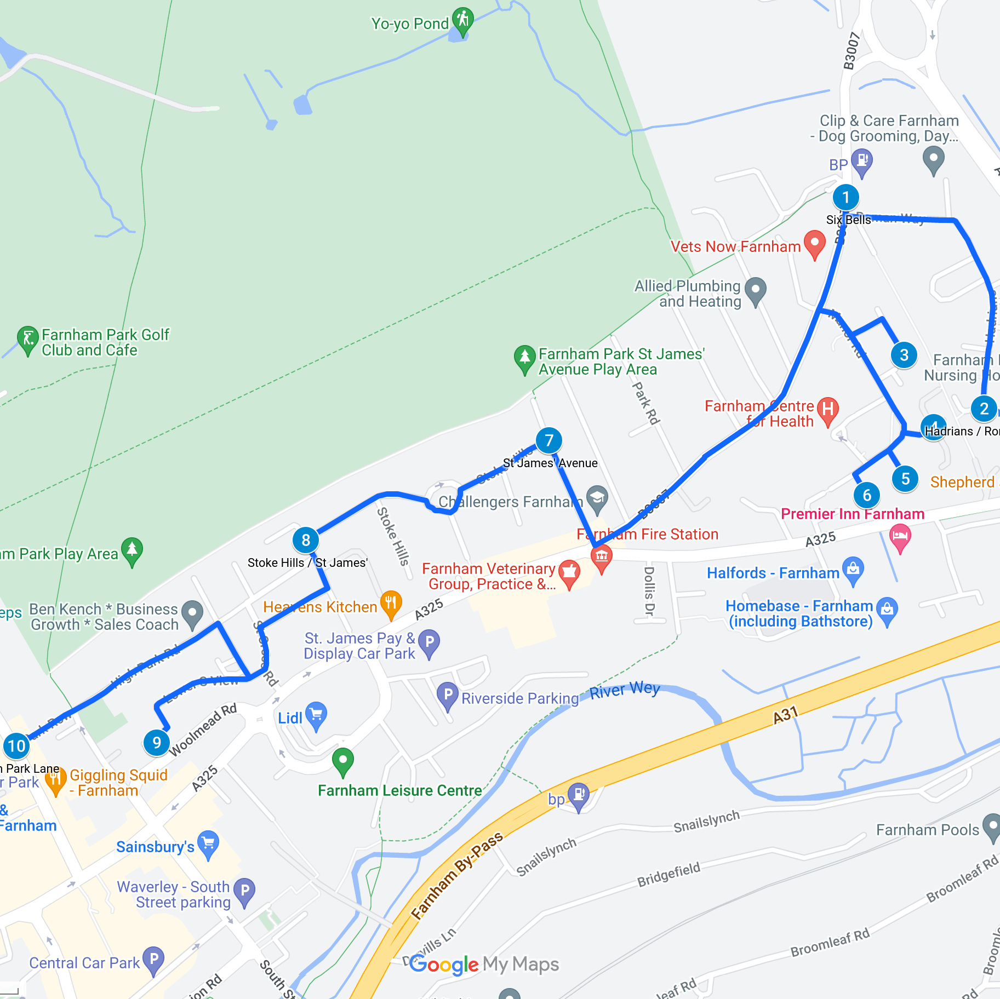

Santa’s Sleigh
Santa Tracker
The reindeer have been fed and the sleigh has been topped up with Elf Dust. Santa has kindly provided a sleigh tracker so families can see where he and his reindeer are on the night of the sleigh routes. Check back on each date for the latest map. You can follow his progress on the live map below. He will be out and about between about 6pm and 8pm.
Visit our new Santa Tracker website for a full screen experience!
Please note, due to weather or other events beyond our control it may not be possible for the Sleigh to cover all roads shown.
Donate
If you wish to donate to the collection online, please use the following donation button and choose “Santa’s Sleigh” when asked for the cause.
Routes (2025)
Santa, Rudolph and the elves are busy getting ready for Christmas, but will be sparing some time to visit the streets of Farnham!
This year’s routes are planned as follows:
- Tuesday 9th December: Folly Hill
- Wednesday 10th December: South Farnham
- Thursday 11th December: Rowledge
- Tuesday 16th December: Chantrys
- Wednesday 17th December: Heath End
- Thursday 18th December: Central Farnham
Route maps are displayed below.


Information
Typically Santa starts on his route about 6pm, finishing by about 7:30pm.
We’re going to be joined once again by local schools and scout groups to help spread Christmas cheer but also to raise money for the Farnham Foodbank.
One of the more ingenious elves is also setting up the Santa Tracker so that you will be able to track Santa on his route via some festive magic!
Although we are collecting cash on the night, we’re more than happy for generous individuals to contribute online via the link above.
Farnham Foodbank
Your donation will help the Farnham Foodbank provide emergency food to people in crisis across our local area. In addition, through local partnerships it will help people access advice on debt reduction and money management which are often challenges which drive people to food banks in the first place.
Between 2021 and 2024, Farnham Round Table has raised over £4000 each year for Farnham Food Bank. We see that contributing to this great cause is even more important at this time of the year.
Route Maps
Folly Hill

South Farnham

Rowledge

Chantrys

Heath End

Central Farnham
